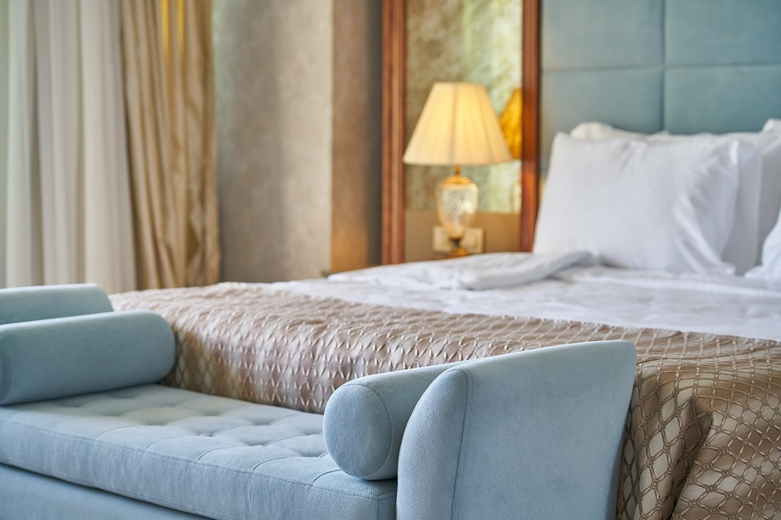
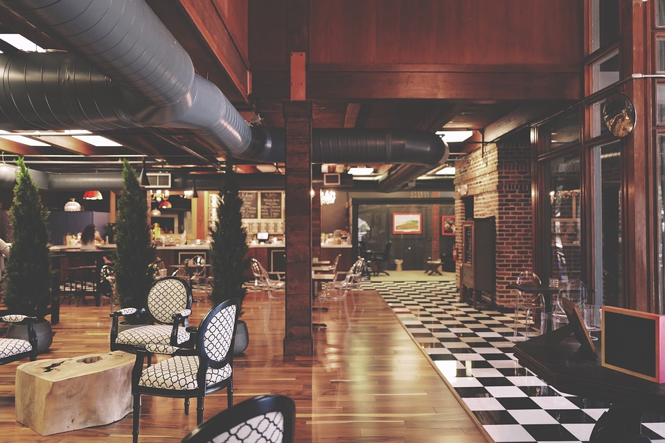

<div class="container my-5">
    <div class="row justify-content-center align-items-center">
        <div class="col-12 col-md-8">
            <h1>Hoteles en Cancún</h1>
            <p>Escondido a tiro de piedra del animado centro de la ciudad de Viena, en el distrito de Margareten , encontrará el Hotel Indigo Vienna - Naschmarkt. Este hermoso hotel se inspira en su diseño de las historias de su barrio. Los jardines secretos y los espacios verdes ocultos del área cobran vida en el hotel, a través de la encantadora terraza, el hermoso patio y el jardín de la azotea, además de extenderse al diseño interior de los espacios públicos y las habitaciones del hotel.

                Dé un paseo fuera del hotel y descubrirá el vibrante Naschmarkt cercano , una visita obligada para los visitantes y EL lugar donde los lugareños se reúnen en todo momento del día. Por la noche, una vez que cierran las tiendas, cobra vida una selección de restaurantes y bares únicos, influenciados por cocinas de todo el mundo. El vecindario también es famoso por sus boutiques, que venden productos únicos que no encontrarás en ningún otro lugar.
                
                Situado perfectamente para explorar la ciudad, el hotel está a poca distancia de la ópera estatal, el "Steffl" (Stephansdom) , y los museos y los imponentes edificios de la Ringstrasse . El hotel está bien conectado con los enlaces de transporte local y está justo al lado de la estación de metro U4 Pilgramgasse , lo que significa que las atracciones como la rueda de las hadas en Prater y el majestuoso palacio de Schoenbrunn son fáciles de explorar.</p>
        </div>
        <div class="col-12 col-md-4">
            <div class="row ">
                <div id="carouselExampleCaptions" class="carousel slide" data-bs-ride="false">
                    <div class="carousel-indicators">
                      <button type="button" data-bs-target="#carouselExampleCaptions" data-bs-slide-to="0" class="active" aria-current="true" aria-label="Slide 1"></button>
                      <button type="button" data-bs-target="#carouselExampleCaptions" data-bs-slide-to="1" aria-label="Slide 2"></button>
                      <button type="button" data-bs-target="#carouselExampleCaptions" data-bs-slide-to="2" aria-label="Slide 3"></button>
                    </div>
                    <div class="carousel-inner">
                      <div class="carousel-item active">
                        
                        <div class="carousel-caption d-none d-md-block">
                          <h2><i class="bi bi-router-fill color-iconos"></i><i class="bi bi-airplane-engines-fill mx-2 color-iconos"></i><i class="bi bi-cloud-fog-fill color-iconos"></i></h2>
                        </div>
                      </div>
                      <div class="carousel-item">
                        
                        <div class="carousel-caption d-none d-md-block">
                            <h2><i class="bi bi-router-fill color-iconos"></i><i class="bi bi-airplane-engines-fill mx-2 color-iconos"></i><i class="bi bi-cloud-fog-fill color-iconos"></i></h2>

                        </div>
                      </div>
                    </div>
                    <button class="carousel-control-prev" type="button" data-bs-target="#carouselExampleCaptions" data-bs-slide="prev">
                      <span class="carousel-control-prev-icon" aria-hidden="true"></span>       
                    </button>
                    <button class="carousel-control-next" type="button" data-bs-target="#carouselExampleCaptions" data-bs-slide="next">
                      <span class="carousel-control-next-icon" aria-hidden="true"></span>
                    </button>
                  </div>
            </div>
        </div>
    </div>
</div>